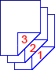
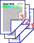
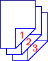
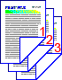

You can print a document face up.
Use this function with Reverse Order Printing to output a printed document in page order. When printing on label paper, this function prevents jamming as a result of the separator being taken off.
If you use Eject Face-up with Reverse Order Printing, print results are as follows:
This example uses a document with three pages printed.
Depending on the printer you are using, this function may not be available.
|
Reverse Order Printing |
Eject Face-up |
Print result |
Print status |
|
Off |
Off |
 |
Printed on the back side of the sheets in descending order. |
|
Off |
On |
 |
Printed on the front side of the sheets in descending order. |
|
On |
Off |
 |
Printed on the back side of the sheets in ascending order. |
|
On |
On |
 |
Printed on the front side of the sheets in ascending order. |
Open the printing preferences dialog box after creating a document in an application.
Click the Output Settings menu on the Detailed Settings tab.
Select the Eject Face-up check box.
After making any other necessary settings, click OK to close the printing preferences dialog box.
Start the print job.